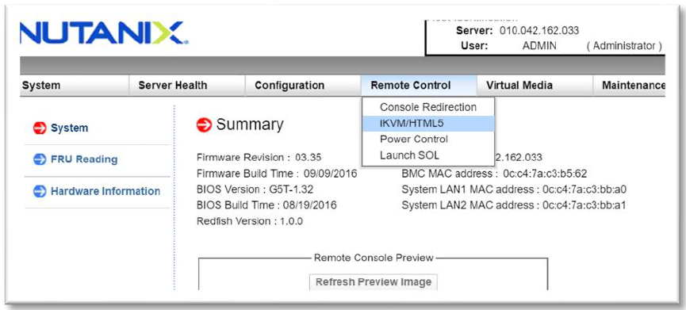

Lab 1a: Connect to and using IPMI¶
Due to Covid-19 Remote Installations are now being done with the majority of our customers. This can be done in a few ways. The remote installation workflow is different but can be simplified by manually setting the node IPs. Because manually setting the node IPs covers a much broader situations we will be focusing on these steps in the Labs. Rack and stack and setting the IPMI IPs via BIOS or ipmitool command will have to be done by someone ahead of time in order for you to have access to these systems remotely.
Note
The remote installation steps are also used for node models that do not have 1Gb ports or dark sites.
Connencting to IPMI:¶
- Open a web browser to your IPMI IP: http://<IPMI IP> USE YOUR ASSIGNED NODE(S)
User: ADMIN Password :ADMIN
Click Remote Console
Click iKVM/HTML5 to get to the console of the node (AHV).
Login with your AHV Host “root” user Lab Assigned Password
To login to the local CVM use the internal IP “ssh nutanix@192.168.5.2”
Login with your CVM Lab Assigned Password
(FROM NODE A ONLY, for team labs only one person should do this step) Since these labs are provided already installed, we want to put the system into a similar state to when they are out of the factory. To do so run the following commands:
a: “cluster status” – shows you the status of your cluster. In our lab the cluster is UP
b: “cluster stop” – this will disable the cluster
Warning
If VMs are online you must shut them down use the following commands: acli vm_list (gets the list of vms) acli vm.force_off <name of VM> (forcefully shuts down VM)
c: “cluster destroy” – removes all CVMs from cluster This is to put our labs in out of factory state.
Note
This is destructive to existing production data. You would not want to do this command unless you are prepared to lose your data still on a cluster.
d: “cluster status” – run again to see “Cluster is currently unconfigured”
Warning
If cluster completes and still showing as still part of a cluster you can manually set it on each node individually with the following commands:
cd /homes/nutanix touch .node_unconfigure genesis restarte: “exit” to exit the CVM and go back to AHV prompt for next lab